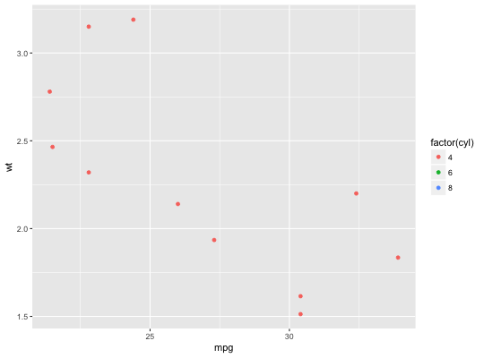
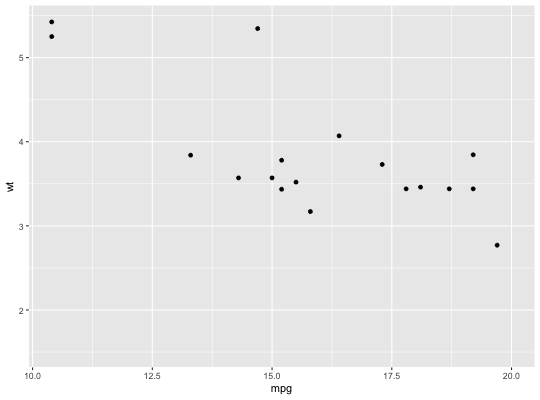
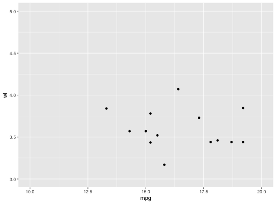

Observations not in this range will be dropped completely and not passed to any other layers. If a NA value is substituted for one of the limits that limit is automatically calculated.
lims(...) xlim(...) ylim(...)
lims, every
argument must be named.For changing x or y axis limits without dropping data
observations, see coord_cartesian.
# xlim xlim(15, 20)#> <ScaleContinuousPosition> #> Range: #> Limits: 15 -- 20 #>xlim(20, 15)#> <ScaleContinuousPosition> #> Range: #> Limits: -20 -- -15 #>xlim(c(10, 20))#> <ScaleContinuousPosition> #> Range: #> Limits: 10 -- 20 #>xlim("a", "b", "c")#> <ggproto object: Class ScaleDiscretePosition, ScaleDiscrete, Scale> #> aesthetics: x xmin xmax xend #> axis_order: function #> break_info: function #> break_positions: function #> breaks: waiver #> call: call #> clone: function #> dimension: function #> drop: TRUE #> expand: waiver #> get_breaks: function #> get_breaks_minor: function #> get_labels: function #> get_limits: function #> guide: none #> is_discrete: function #> is_empty: function #> labels: waiver #> limits: a b c #> make_sec_title: function #> make_title: function #> map: function #> map_df: function #> n.breaks.cache: NULL #> na.translate: TRUE #> na.value: NA #> name: waiver #> palette: function #> palette.cache: NULL #> position: bottom #> range: <ggproto object: Class RangeDiscrete, Range> #> range: NULL #> reset: function #> train: function #> super: <ggproto object: Class RangeDiscrete, Range> #> range_c: <ggproto object: Class RangeContinuous, Range> #> range: NULL #> reset: function #> train: function #> super: <ggproto object: Class RangeContinuous, Range> #> reset: function #> scale_name: position_d #> train: function #> train_df: function #> transform: function #> transform_df: function #> super: <ggproto object: Class ScaleDiscretePosition, ScaleDiscrete, Scale> #>Warning message: Removed 19 rows containing missing values (geom_point).Warning message: Removed 14 rows containing missing values (geom_point).# Change both xlim and ylim ggplot(mtcars, aes(mpg, wt)) + geom_point() + lims(x = c(10, 20), y = c(3, 5))Warning message: Removed 18 rows containing missing values (geom_point).